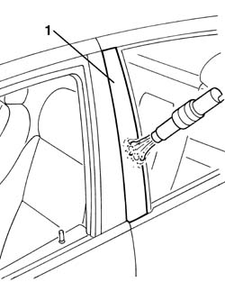
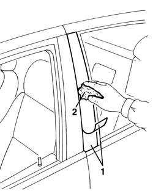

7010E50 rear side door pillar trim (one) lh or rh - r r
- Path
- Procedures > 70 FITTINGS > 7010 PASSENGER COMPARTMENT REAR SIDE DOORS > 7010E rear side door trim > 7010E50 rear side door pillar trim (one) lh or rh - r r
- Kind
- repair procedure (removal / refitting; the operation number is the code)
- Applies to
- all engines; all production periods
- Interactive page
- https://sloeber94.github.io/elrnDB-a156/en/#/3238683
Applies to: all engines; all production periods
 Removing
Removing
 Refitting
Refitting7010C44 interior handle panel - r r
7010E38 rear side door interior handle-r r
7010E34 inner or outer panel on rear side door frame - rr
7010D38 rear side door manual window mechanism handle/ring-nut r r
7010E22 grille for radio system on rear door panel (one) lh or rh - r r
5570T96 rear side speaker - r r
7010E11 lh or rh rear door inner panel - r+r with fouling parts removed
7010A04 rear side door water guard protection - r r or arrange with door panel removed
7010C10 rear door outer handle - r r with door panel removed
7010D26 rear side descending window glass scraper (outer) r r
7010D30 rear side descending window glass scraper (inner) r r
7010D18 rear side door descending window glass channel r r
7010A50 rear side door anti-wind noise seal r r
1. Warm up the trim with hot air and remove it.

Applies to: all engines; all production periods
Refitting
RemovingUse a new trim.
Clean off residue adhesive from the intervention area, by using heptane.
Wet the intervention area with water and soap.
1. Remove the trim adhesive side protection, and position it in its seat.
Water and soap allows the slidings needed for the right positioning.
2. Press on the trim with a sponge in order to remove air bubbles.

Applies to: all engines; all production periods
7010A50 rear side door anti-wind noise seal r r A
7010D18 rear side door descending window glass channel r r
7010D30 rear side descending window glass scraper (inner) r r
7010D26 rear side descending window glass scraper (outer) r r
7010C10 rear door outer handle - r r with door panel removed
Check the correct function of the glass window.
7010A04 rear side door water guard protection - r r or arrange with door panel removed
7010E11 lh or rh rear door inner panel - r+r with fouling parts removed
5570T96 rear side speaker - r r
7010E22 grille for radio system on rear door panel (one) lh or rh - r r
7010D38 rear side door manual window mechanism handle/ring-nut r r
7010E34 inner or outer panel on rear side door frame - rr
Topics linked from this page (14)
- 5570T96 rear side speaker - r r
- 7010A04 rear side door water guard protection - r r or arrange with door panel removed
- 7010A50 rear side door anti-wind noise seal r r
- 7010C10 rear door outer handle - r r with door panel removed
- 7010C44 interior handle panel - r r
- 7010D18 rear side door descending window glass channel r r
- 7010D22 rear side door descending window glass guide (one) - r r with door panel (and support frame) removed
- 7010D26 rear side descending window glass scraper (outer) r r
- 7010D30 rear side descending window glass scraper (inner) r r
- 7010D38 rear side door manual window mechanism handle/ring-nut r r
- 7010E11 lh or rh rear door inner panel - r+r with fouling parts removed
- 7010E22 grille for radio system on rear door panel (one) lh or rh - r r
- 7010E34 inner or outer panel on rear side door frame - rr
- 7010E38 rear side door interior handle-r r